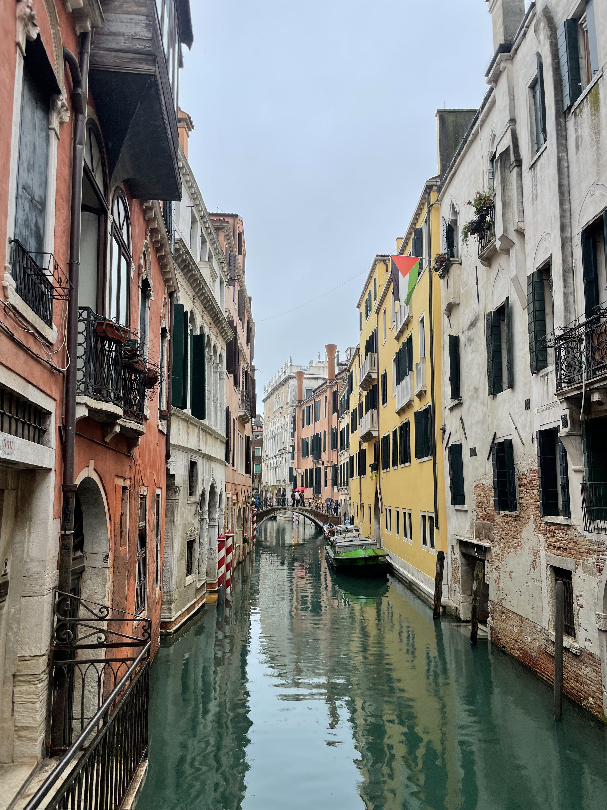
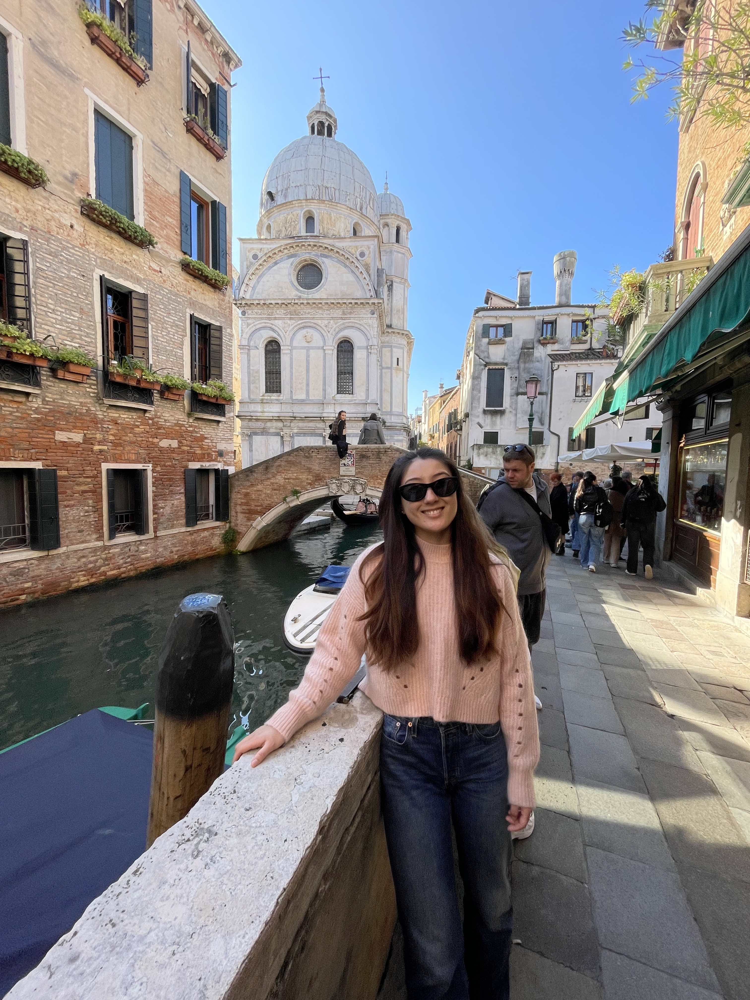

24th October 2025
I arrived on Thursday frol Ancona while Sophie had spent already a day in Venice where she saw the Doge Palace. It was raining and giant puddles had formed on the streets which made it dofficult to get around, Fortunately on Friday, the weather cleared and we were treated to a wonderful sunny day. In between meetings for work we were able to explore Venice in the sun, getting lost in the mazes of the streets and eating delicious cicchetteria for lunch. We tried the locally invented Bellini which didnt suit either of our tastes even though it was good enough for Ernest Hemmingway. We had a fantastic dinner but for Sophie things were about to take a turn for the worse...

25th October 2025
Sophie had a full blown fever and had soent a restless night trying to get some rest. The best course was to rest for most of the day which in all honesty was quite welcome. I headed out to the Basilica di San Marco which had beautiful mosaics on the ceiling but public access was restricted to the main hall only. I soent some time wandering the canals then and in the evening trying to make my way without navigating with a map. Its very difficult but entertaining turning down a street only to find that the canal stops you in your tracks and you have to find a separate track around. Overall we liked venice but for us we didn't need to spend more than a day or two there.